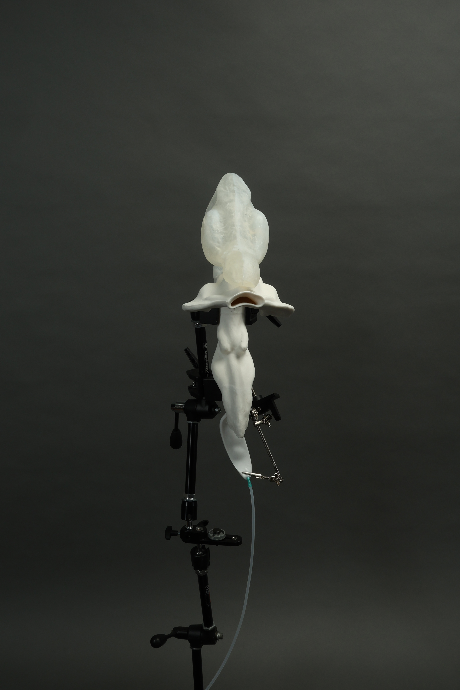
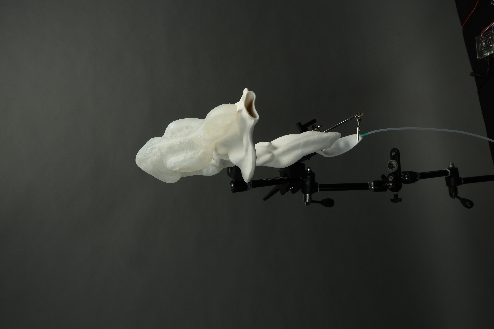
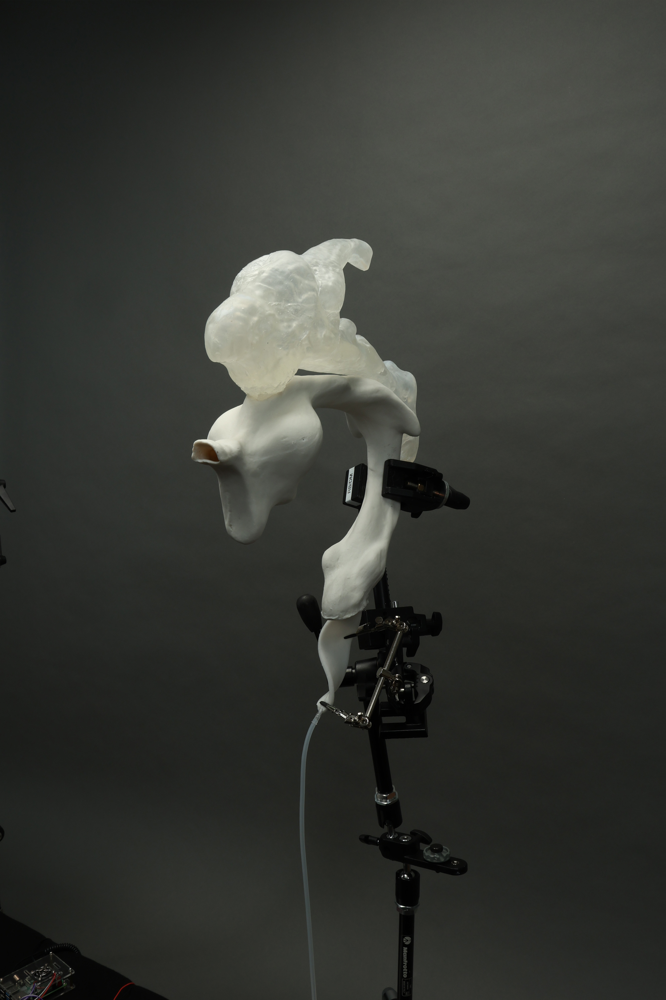
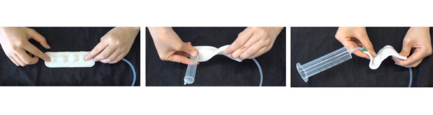

About
"Investigating the relationship between materiality and cognition: how material and technical systems simultaneously reveal and conceal the conditions and limits of human understanding."
Hi, I'm Ziyi.
My practice bridges digital media, philosophy of technology, and fine art. I am specifically interested in embodied cognition, cultural techniques, human-machine relations, and the critical examination of artificial intelligence through the lens of material feedback and sensory reorganization.
Based in Bremen, Germany.
Contact: ziyi.li.research@gmail.com
Research & Papers
Vocal Organ: Apparatus for Generating Voice and Images
Master Thesis, Digital Media | Hochschule für Künste Bremen, 2026
Advisors: Prof. Dr. Andrea Sick, Prof. Ralf Baecker, Prof. Natascha Sadr Haghighian
DOI: 10.31235/osf.io/ywdct_v1
A 60-page interdisciplinary thesis investigating how the material act of phonation relates to the emergence of intelligence. Traces the progressive stripping of voice's material conditions through writing, phonography, and AI-generated speech. Proposes "The Room without Echo" as a material-acoustic critique of the Chinese Room thought experiment. Engages with cybernetics, embodied cognition, and philosophy of mind.
Selected Work

The piece simulates the mechanisms of vocal cords and resonant cavities, making a voice the central expressive medium of the installation.
- Year 2025
- Location Bremen, Germany
- Size 2x3m
- Materials porcelain, soap, raspberry pi, silicone, plastic film, rubber tube, magic arm, platform, metal pipes, mounting brackets, needle, air pump
Overview
This work consists of hollow sculptures made from porcelain and soap, integrated with a custom-built, deformable silicone structure. Guided by an air pump, controlled airflow is introduced to reconstruct a humanoid vocal tract and produce a voice.
Concept
Taking humanoid voice as its starting point, the work treats a voice itself as a medium to explore how it functions as a "converter" between consciousness/concept and material form. On the one hand, a voice---being immaterial---translates thought into perceptible existence; on the other, it also reveals how material form is shaped by concepts and perception. The work poses a key question: can the boundary between consciousness and matter be disrupted by the mediating presence of a voice? In doing so, it presents a dynamic interplay of internal and external, abstract and concrete, mind and matter---within a single constructed entity.
Methodology
This constructivist experimental installation unfolds in a state of "ongoing generation," emphasizing its open-ended, non-finite nature. It echoes the idea of the "Material-Discursive Apparatus," revealing how binary structures continuously interact and redefine each other in process.
Technical Details
Visually, the work draws upon references such as 3D modeling, medical imaging, and anatomical diagrams to approximate the spatial volume of the human oral and nasal cavities, thereby constructing a humanoid acoustic resonance chamber. The silicone structure is connected to the air pump; through tubes, micro-controlled airflow is introduced to generate different vocalizations, simulating the vibration mechanism of vocal cords.
Implications and Questions
Further lines of inquiry include: can humanoid voice serve as a key factor in constructing the subjectivity of artificial intelligence? Does future intelligence necessarily require a voice---or similar technological forms---as a medium to develop independent consciousness structures? If a voice is understood as an immaterial yet perceivable phenomenon, does it also point to the complex and fluid relationship between body and consciousness?
Conclusion
This work is not only a simulation and reconstruction of the vocal mechanism, but also a reflection on how "intelligence" might be embodied, formed, and perceived---whether within the human body or in non-human systems.





An exploration of vocalization as a material process, reconstructing the resonant cavities of the human body in porcelain and silicone to examine voice as a bridge between matter, identity, and consciousness.
- Year 2024
- Project Link digitalmedia-bremen.de/project/initial-voice/
Concept
This work investigates the origins of the human voice, weaving together practical dimensions from biology and engineering with the aesthetic and functional complexities that voice embodies. It examines how voice shapes human development, how it may be rendered into tangible, material form, and how it interfaces with the physical world through various mediums. The study further engages with autonomous speech generation in artificial intelligence, drawing meaningful parallels with language acquisition models and the lived experiences of individuals with dysarthria, while situating the voice within broader discourses of race, identity, and culture.
Methodologically, the work employs traditional ceramic modeling techniques to cast hollow porcelain structures that replicate the resonant cavities of the human body — the mouth, the throat — the very architecture through which sound takes shape. By driving airflow through an air pump, and manipulating that flow across a series of deformable silicone air sacs in concert with auxiliary objects, the work gives rise to sound through purely material and mechanical means.
At its philosophical core, this study probes the potential of voice as a threshold between the material and the metaphysical — a medium that is at once bodily and transcendent. It culminates in a speculative proposition: that artificial intelligence may one day attain a form of genuine, autonomous consciousness analogous to the human condition, contingent upon its capacity to develop a voice truly its own.
Curriculum Vitae
Education
Hochschule für Künste Bremen, Germany
Hochschule für Künste Bremen, Germany
Luxun Academy of Fine Arts, Shenyang, China
Honors & Awards
Awarded by DAAD and HfK Bremen
Exhibitions
Vocal Organ (Solo) - Hochschule für Künste Bremen, Germany
I Hope This Finds You Well (Group) - Hochschule für Künste Bremen, Germany
Habla con la papa en la boca (Project) - After the Butcher, Berlin, Germany
goarwywaswyt (Project) - Hochschuletage, HfK Bremen, Germany
Studies of Change (Group) - Alte Pathologie, Bremen, Germany
Humanoid Vocal Simulator (Solo) - Hochschule für Künste Bremen, Germany
LACUNA: Inside of a Dumpling (Project) - Hochschuletage, HfK Bremen, Germany
Walking Towards a Garden (Project) - Hochschuletage, HfK Bremen, Germany
Our Porous Limits (Group) - SPEDITION Kunst- & Kulturverein, Bremen, Germany
OUT/SYNC (Group) - Galerie HBKSAAR, Saarbrücken, Germany
When to Move in Disorientation (Project) - Open Space Domshof, Bremen, Germany
Shape Shifting – Sightings (Project) - Circa106, Bremen, Germany